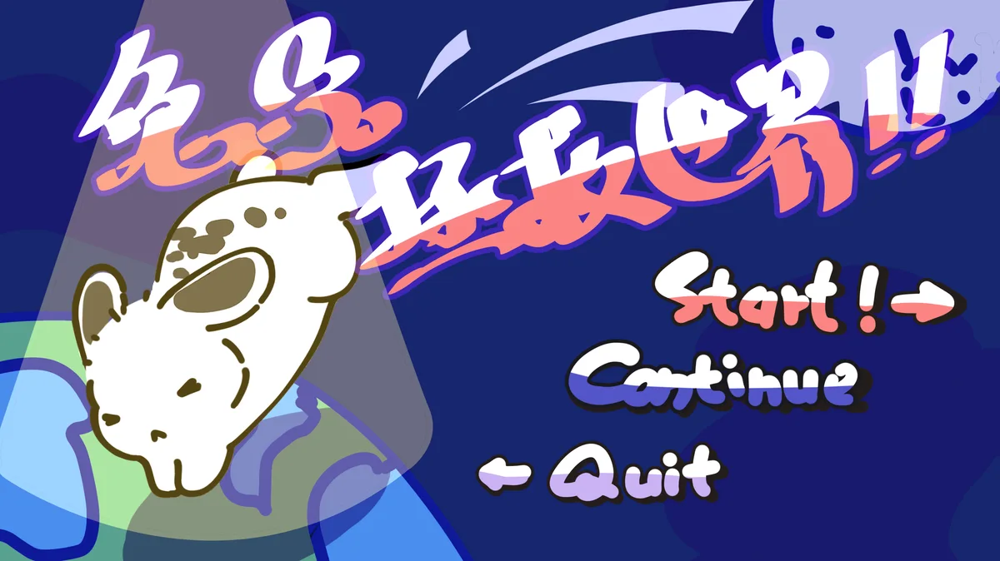
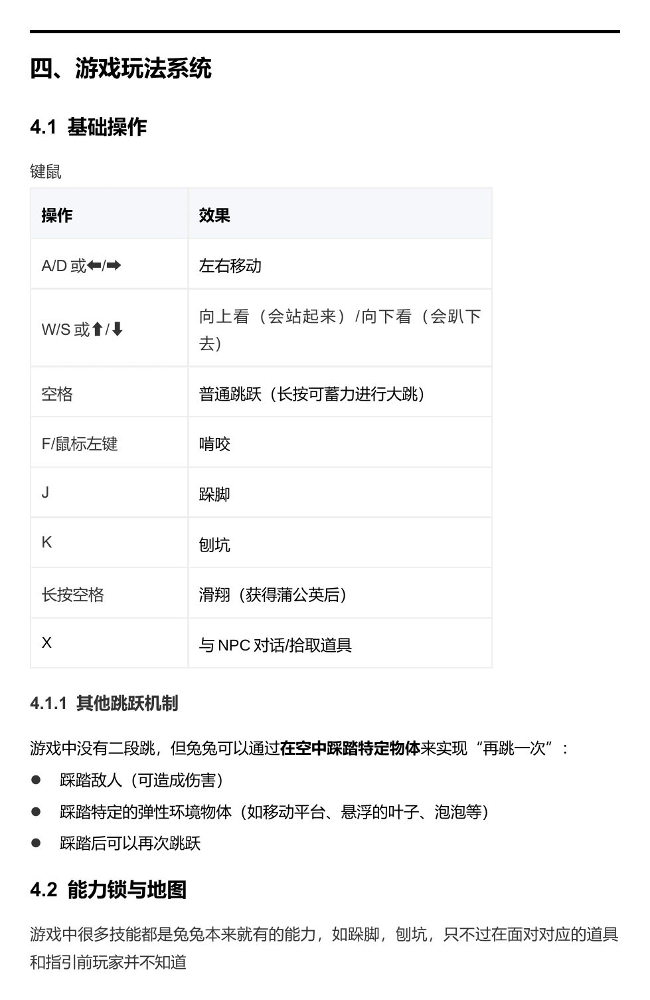
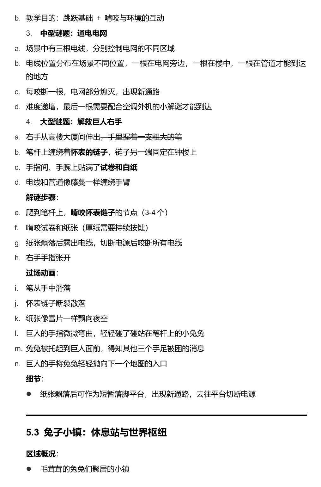

一只兔兔的旅程
为纪念宠物兔而创作。兔兔穿过奇幻世界，寻找回到主人身边的路；“拯救世界”也意味着拯救它所珍视的人。
一只兔兔通过跳跃、啃咬和探索，在巨人的世界里寻找回家的路。

为纪念宠物兔而创作。兔兔穿过奇幻世界，寻找回到主人身边的路；“拯救世界”也意味着拯救它所珍视的人。
2D 横版平台的移动、跳跃和探索是体验基础。世界与能力的扩展方向记录在策划案中。
兔子小镇、森林、地下王国和天空之城构成计划中的旅程。啃咬、跺脚、刨坑等能力属于设计记录，演示视频展示当前 Demo。
点击摘页查看完整尺寸。

